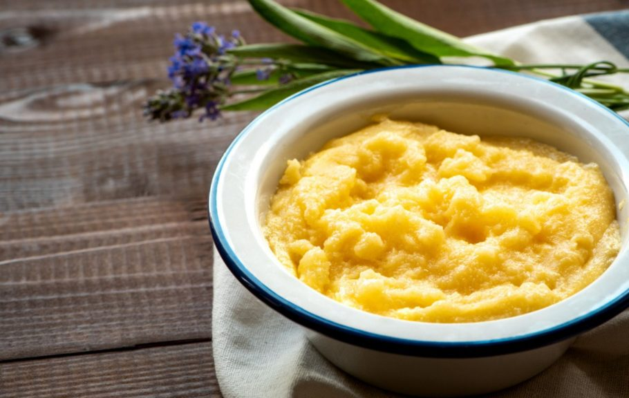

Kačamak

Description
Being a one-ingredient meal, it’s hard to think of a dish that’s easier on the wallet.
On top of that, it’s also easy on the stomach, so people often have it as a quick and light breakfast.
And unlike most other Serbian foods, it’s vegan.
Ingredients
- 2 cups corn flour
- 8 cups water
- salt
Instruction
- Pour the water into a pot. Add a bit of salt and bring it to a boil.
- Start adding the corn flour bit by bit while stirring the pot and breaking
the lumps using a wooden spoon.
- Turn the heat down and keep stirring for another five to ten minutes.
When you can see the bottom of your pot while stirring, it’s ready!
Once it’s done, you can eat kačamak plain or add some milk, cheese, or kajmak for more flavor. Prijatno!